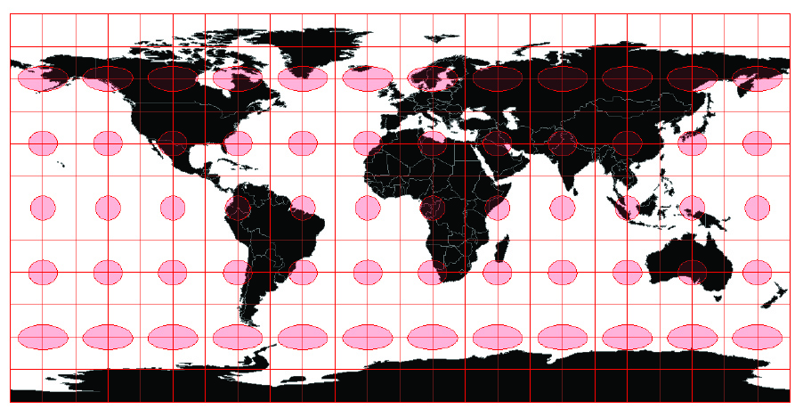
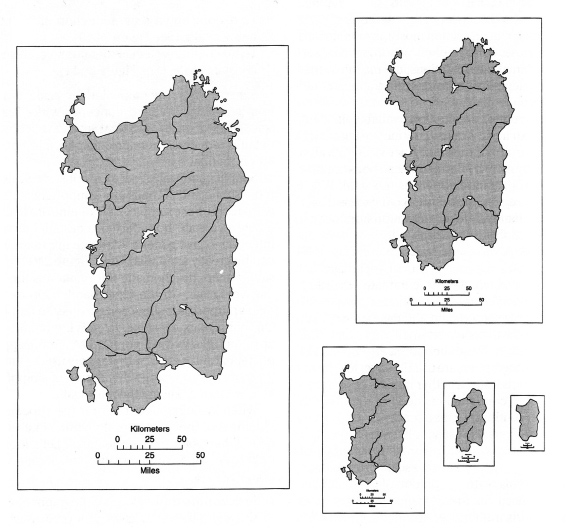
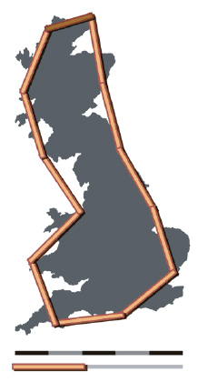
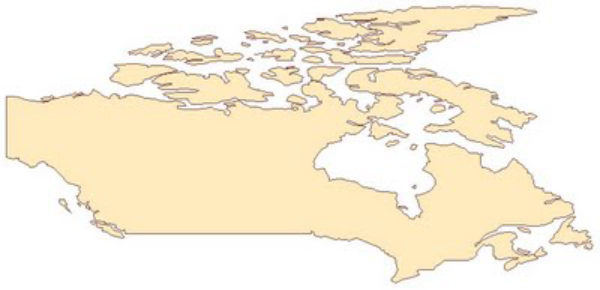

Geospatial
Visualization
Visualization
School of Architecture
Dr. Timothy Norris
tnorris@miami.edu
tnorris@miami.edu
Christopher Mader
cmader@med.miami.edu
cmader@med.miami.edu
Image: D.M. Swart
Artistic cartography:
creative ways to peel the globe
Artistic cartography:
creative ways to peel the globe
Coordinate Reference Systems
- Datum
- Geographic coordinate system
- Projected coordinate system
- Geospatial data must have: datum + geographic coordinate system
- Projected coordinate systems are optional
(but needed for measurement)
Datum
- Center of the earth?
- That which is given?
- Ellipsoid
mathematically defined surface approximating the shape of the earth - Geoid
surface of the earths gravity field - approx sea level
Geographical Coordinate Systems
- Latitude and Longitude - spherical coordinates
- Very common, but cannot be used for measurement
- Things to remember:
- EPSG - European Petroleum Survey Group
- WGS 84 - most common datum globally - EPSG:4326
- NAD 83 - most common datum in the United States - EPSG:4269
Projected Coordinate Systems
- meters or feet - Cartesian coordinates
- Used for measurement and mapping
- Things to remember:
- Projected Coordinate Systems are specific to the area being mapped
- In the USA: the "State Plane System"
- Around the Globe: the "UTM Grid"
- For web based mapping systems
WGS 84 Web Mercator - EPSG:3857
Projected Coordinate Systems (more)
Projection Surfaces
Tissot and Distortion

Tissot's ellipses on an unprojected (lat/long) earth
Universal Transverse Mercator - UTM

The 60 UTM coordinate system zones, each divided into north and south halves at the equator
State Plane
Other Projections
Also see: https://map-projections.net/imglist.php
Simplification and Selection
Classification
unknown artist (cerca 1587). Fool's Head World Map. Image from National Maritime Museum, Greenwich, London.
Quick Overview
- Generalization
- Selection
- The decision of what geographic phenomena are represented on the map - Simplification
- The decision of what spatial resolution will be used for representing geographic phenomena
- Selection
- Classification
- The decision of how to display attribute information that represents geographic phenomena
Scale Matters
Purpose Matters
“Map Generalization [selection and simplification]: Little white lies and lots of them”
Monmonier, M. (1996 [1991]). How to Lie With Maps. Chicago, University of Chicago Press.
Monmonier, M. (1996 [1991]). How to Lie With Maps. Chicago, University of Chicago Press.
Selection
Scale matters: several examples of selection across different scales
Purpose matters: selection across constant scale where on the left physical geography is emphasized whereas on the right there is a base map good for showing attribute information of non-physical phenomena

Robinson, A. H., J. L. Morrison, et al. (1995 [1953]). Elements of Cartography, sixth edition. USA, John Wiley and Sons.
Generalization
How long is the coastline of Great Britain??


Scale Matters: for a large scale world map, the polygon on the left will be sufficient, but for a poster map of the world more detail will be necessary.
Benoît Mandelbrot (1967). "How Long Is the Coast of Britain? Statistical Self-Similarity and Fractional Dimension", Science, New Series, Vol. 156, No. 3775. (May 5, 1967), pp. 636-638.
Simplification
Too much detail gives more visual weight to the line

Too much detail will make the file size larger

Simplification
ArcMap has two common algorithms
- Point remove
- Bend simplify

QGIS has several tools
- Simplify Geometries
- GRASS - v.generalize

Classification
Classification is not always desirable
-
Attribute data directly linked to the visual variable
- the color is linked to the data (a satellite image)
- the size is linked to the data (a proportional symbol map) - For interval or ratio measurement
Classed: how many classes?
- Clorapleth: 5-7 is recommended
- Chorachromatic: < 7
- How to decide on class divisions?

A non-classed proportional symbol map. Note how you automatically class them in your mind.
Classed
2008 Presidential Election by County
Mark Newman - mejn@umich.edu. Department of Physics and Center for the Study of Complex Systems, University of Michigan. Under creative commons license.
non-Classed
2008 Presidential Election by County with Linear Percentages
Mark Newman - mejn@umich.edu. Department of Physics and Center for the Study of Complex Systems, University of Michigan. Under creative commons license.
Classification
Perceptual Problems

- Be careful with the range of sizes (above)
- Be careful of optical illusions (right)
Getting Some Data (exercise #1)
- Create project - do good data management!!
- Goto the Miami-Dade Data Portal
- Find the Contaminated Sites data set
- Note anything interesting about the context of this data.
- Look for projection information. What EPSG? Other information?
- Download the data as a CSV file (save in a project folder).
- Open the CSV in your GIS platform of choice
- Find out how to "Create Points" for x/y (lat/lon) data
- Perhaps google "create points" and the name of the GIS platform ... ArcGIS Pro/QGIS
- Create points for the Latitude/Longitude columns
- Create points for the X_Coordinate/Y_Coordinate columns
Getting Some Data (exercise #1)
- Re-project the data to correct state plane
- re-project by "export" (right click on layer name and look for "export" or "data > export")
- pay attention to CRS/projection - explore!! (google is your friend)
- datum NAD83 (2011) feet
- find correct state plane CRS for Miami-Dade (use search filters wisely)
- With both the CRS information and the map visible, send a screenshot to me
Getting Some Data (exercise #2)
- Create project - do good data management!!
- Goto Open Street Map (OSM)
- look around, find a place with not too much data (Key Biscane for example)
- Locate and click the "Export" button
- Make your selection small
- Click the large "Export" button
- Open the downloaded OSM data in QGIS
- In "Plugins" menu install the plugin "QuickOSM"
- Once installed, in "Vector" menu select "QuickOSM"
- Load the "map.osm" file (copied from your downloads to your project data directory)
- Be patient, it may take a while
Getting Some Data (exercise #2)
- Explore the OSM data
- Look at the attribute tables for each layer that was imported (points, lines, polygons)
- With the OSMFile (polygon) layer selected, select filter from the "Layer" menu
- create a filter where "Building" != ''
- Export the polygon layer to a shapefile (in your data directory with a good name)
- Use a projection you feel is appropriate
- Note that the new layer is *not* a memory layer
- Open the shapefile in ArcGIS Pro
- Create project - do good data management!!
- Add the shapefile to the map
- Right click the layer, choose symbology ...
- Use "Unique Values" with the column "buildings"
- With the map visible, send a screenshot to me